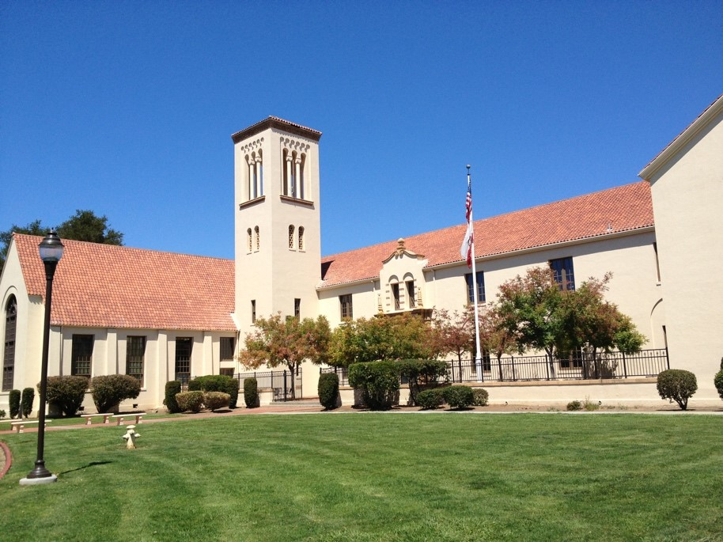

Palo Alto High School

Profile
Palo Alto High School
50 Embarcadero Road
Built in 1918, 1928, 1945, 1955, 1960, 1969, 1972, 1975, 2000-2005, 2012-2018
Total Site Area: |
44.2 Acres |
|---|---|
|
Building Area/Misc. Circulation |
25.0 |
|
Parking Area |
8.3 |
|
Hard-Court Play Area |
3.0 |
|
Lawn Area |
0.8 |
|
Turf Play Area |
7.1 |
|
Palo Alto Unified District Offices |
2.6 |
|
Palo Alto Unified District Corporation Yard |
2.1 |
Building Area: 269,314 SF
Existing Classroom Size 736 to 1600 SF
2006/2007 Enrollment: 2,097
Palo Alto High School occupies an approximate 49-acres site across El Camino Real from Stanford University. This site is owned and occupied by the District but has a reversionary clause to Stanford University on 26 of the acres. The school is composed of 16 permanent buildings constructed between 1918 and 2018.
The original construction, in 1918, included the Administration & Classroom Building and the Auditorium Building. Much of the original administration/classroom structure was demolished in 1972, leaving the two-story portion referred to as the “Tower Building”. In 1928, the original Boys’ Gymnasium was constructed. The construction of the Industrial Arts Building was completed in 1945 and expanded to include an electronics classroom in 1955. The Boys’ Gymnasium was expanded in 1946 to provide locker and shower facilities and staff offices. In 1960, a new demolished Science Classroom Building was constructed. The addition of the Girls’ Gymnasium and the swimming pool was completed in 1969.
A major expansion of the school was undertaken in 1972 with the addition of seven new buildings including; the Fine and Performing Arts Building, the English Building, the Lecture Center, the Social Studies Building, the Foreign Language Building, the Mathematics and Science Technology Building, and Resource Materials Center. In 1975, a Student Activities Center and Woodshop were constructed. Occupying almost three acres of this site are the Administrative Office for the Palo Alto Unified School District. This facility is composed of a single-story structure, built in 1955 and expanded in 1960, and its own separate parking area.
In 1968, an extensive renovation of the Administration Building, Auditorium, and the Boys’ Gymnasium were undertaken. The purpose of this project was the seismic retrofitting of these structures for increased earthquake safety. In 1998, following the Loma Prieta Earthquake, the Campanile of the Tower Building was separated from the building and strengthened. In 2004 a new Science Building was completed and the Science Building constructed in 1960 was removed from the campus interior. Renovations to Fine and Performing Arts Building, the English Building, the Lecture Center, the Social Studies Building, the Foreign Language Building, the Mathematics Building, Student Center and locker rooms in both gymnasiums were fully renovated.
As part of the Strong Schools bond program, several projects were completed. During the first phase, a new two-story classroom wing with 27 classrooms and a two-story Media Arts center with eight new classrooms was built in the location where portable classrooms were. Athletic fields were re-built and the Football Stadium was replaced with new bleachers and a new concessions building. This phase was completed in 2013.
The next phase constructed a new 600 seat Performing Arts center and made exterior improvements to the Tower and Haymarket Theater, like replacement of gutters, trim, windows, and new paint. The Boilers feeding these two buildings were also replaced during this phase, which was completed in 2015
The last phase included a new Athletic Center to replace the Boys and Girls Gymnasiums, which was completed in 2017. After the Athletic Center was completed, construction began on a complete renovation of the Library building (Bldg 500), which will be completed in early 2019. Plans have been approved for an addition of four additional science labs to the Science building as well, which is pending approval.
Needs Summary
Proposed Master Plan projects include the following:
- Modernization and remodel of the Tower Building. The existing administration area is poorly organized and not as functional as it should be. Reception area, office areas and support spaces are inadequate. The building needs major ADA/accessibility upgrades including a new elevator and major restroom modernization.
- Modernization and remodel of the Haymarket Theater. With the new Performing Arts Center the space has become obsolete. A major modernization and remodel will repurpose the building.
- The existing, underutilized cafeteria/student center building will be replaced with a new facility to accommodate the food service operations with an adjacent culinary program for students. An outdoor eating area will complement the food service and culinary programs. A wellness and conference center are also contemplated as program elements for this facility.
- The existing 900 building and shop building will be replaced with a new, two-story STEM facility that will house the robotics, engineering and project-based learning.
- The existing classroom buildings have undersized classroom and, in many cases, inadequate mechanical systems. The classroom buildings will be modernized and, in some cases, reconfigured to better address the specific programs.
- The relocatable classrooms in the quad will eventually be removed and the quad redesigned.
- Standard Classrooms
- Many of the existing classrooms are undersized or awkwardly configured and will required reconfiguration of the partitioning. The older classrooms lack air conditioning which will be introduced campus-wide. The older classrooms also lack some of the technology upgrades which are district standard for new classrooms.
- Double classrooms or two adjacent classrooms that can be combined into one larger is highly desirable throughout the campus. New buildings have this feature which is very popular.
- Specialty Classrooms
- The existing Choral classroom is undersized and cannot accommodate the desired. 120 students
- The existing science building lacks adequate staff office areas as well as meeting spaces.
- The drama program needs a larger stage craft room which is located closer to the back of house of the existing Performing Arts Center.
- Wellness and Counseling
- The current program is scattered around the campus. A consolidation into a central facility is desirable. The existing facilities lack a central reception and waiting area which is necessary to greet and direct students and visitors. Additional offices are necessary as well as conference and meeting rooms.
- Administration
- The current layout for the administration areas lack the organization desired. Generally, the spaces are too small with programs located in rooms never intended for that function. Additional conference and meeting spaces are necessary.
- The College and Career Center lacks a reception area where students can information as well as a large conference space to host speakers.
- Food Service / Student Center
- The current facility is undersized and poorly configured. It’s an introverted space in lieu of being extroverted and taking advantage of its location on the Quad.
- Site
- Complete the vision of the previous Master Plan by removing the relocatable classrooms in the Quad and designing a central space that ties the campus together.
- Create a Churchill Street entrance to the campus.
- Replace aging infrastructure including hot and chilled water site distribution.
Facilities Conditions
Architectural Review
Palo Alto High site is in a prime location in the community and has access from three sides of the campus. The main public access point is off of Embarcadero Road with a secondary access off Churchill Ave. The parking and drop-off area in the north parking lot was reconfigured as part of the Performing Arts Center project and has been improved to allow better circulation and work in conjunction with City improvements to the traffic signals on Embarcadero. The south lot off Churchill was replaced in 2011 as part of the Baseball fields project, and photovoltaic panel car port structures were added in 2018. Traffic flow in this lot is still congested before and after school, but there are limited options to improve this due to Churchill’s current traffic flow.
The buildings on the campus present various styles relative to the era that they were built. The major landmark of the campus is the Administration Building coupled with the Haymarket Theater. These structures were constructed in 1918 as a part of the original school. Both of these buildings are landmarks of historical significance to the Paly community. These buildings have been seismically upgraded and renovated over the years, but more renovation work remains. Each of the buildings has specific needs relative to their function but in general most elements need to be replaced or upgraded. Replacement of the windows and other exterior improvements and dry rot repairs have addressed critical needs identified in the 2007 master plan report and conditions assessment.
The majority of the classroom buildings on campus were constructed in 1970. These are single story rectangular or square buildings with tiled hip roofs and wood siding. The roof structure of these buildings extends over a walkway, which surrounds the buildings allowing covered exterior access to most of the classrooms, or exterior covered access to the interior classrooms. The typical interior feature concrete slab floors with carpet or vinyl tile, gypsum board walls with tackable vinyl wall surfaces and suspended acoustical ceilings. The majority of these buildings have been modernized during the past two bond programs. The science building built in 2004 reflects the roof and style of the 1970 buildings with exterior finishes similar to the Administration Building. These 1970 buildings are Buildings 100, 200, 300, 300A, 400, 500, 600, and 700.
Building 900 is an Industrial Arts building, which was built in 1945 and expanded in 1955. In 1985, the building was seismically upgraded. Various remodeling has taken place over the years but not recently. This building houses the Auto Shop, Robotics lab and an Adult-Ed Fiber Arts Program. This building has concrete floors, the walls are painted plywood or plaster and the ceilings are exposed framing with insulation. This building is slated to be replaced by a new STEM lab building to house CTE programs.
Building 1000, the Wood Shop Building was constructed in 1975 and houses the wood shop classes. This is a concrete building with a concrete floor and painted concrete or plaster walls and exposed framing at the ceiling.
Newly constructed buildings on campus include the Media Arts Center, the Performing Arts Center, a new two-story classroom wing and the Peery Athletic Center that replaced the old gyms.
The condition of the facilities on this campus range from excellent for the newly constructed buildings to good for the renovated buildings of the Building for Excellence program to poor in the old Administration, Haymarket Theater and Buildings 900 & 1000 where a great deal of work needs to be done.
Civil Review
Storm Drainage
The storm drainage system at the high school has been significantly improved during the Strong Schools bond program, but still has some problem areas on campus. Three retention structures were built during the first two phases which greatly increased the ability to drain surface water on the north and east sides of campus. In addition, a SD ejection pump was installed as part of the Performing Arts Center project which connects the storm drain system with the City’s main line under El Camino Real. Other improvements include new drains in front of the Library and around the gymnasium area, adding a retention system under the turf football and soccer fields, and a slot drain system in the baseball field. All these improvements have collectively addressed the most critical issues on campus, but there remain some pockets of the site that need to be connected to this new system and taken off the old dry well system.
Pavement
The paved areas around the site have been replaced in several critical areas over the past ten years, especially where poor drainage had created damaged paving in the past. However, there remain many areas on the interior of campus where tree roots have lifted the surface and these areas require removal and resurfacing with the proper cross slopes for drainage. In other areas there is uplifting of the concrete surfaces which require removal and replacement and in some cases there are trip hazards that need to be addressed. An area due to be addressed in the near future would be the fire lane and access road off the Churchill Ave. entrance.
Accessibility
Each new project included path of travel and new parking spaces with access ramps during the Strong Schools bond program, and this will remain for as future projects are developed. There is currently sufficient parking to meet state guidelines for the campus, but parking is now at a premium versus having a surplus. Each building when modernized or constructed was required to meet all of the current accessible standards. The buildings not renovated during the past two programs do not meet all of the access standards and need to be addressed as each building is upgraded. These building include the industrial arts buildings, Haymarket Theater and the Administration building.
Water Lines
New domestic water lines have been brought into all of the recent constructed buildings on campus plus most of the water lines internal in the buildings have been updated. The existing piping has been reduced in capacity from many years of mineral build up inside the piping. In this location the carrying capacity of the pipe was reduced by one third. Further testing should be done to establish the overall condition campus-wide. Video taping should be completed on the entire system and extensive replacement anticipated.
Sanitary Sewer System
Records indicate that there has been no replacement of the sewer system. There have been no history of problems with the system and all of the new buildings have new internal systems that are tied into the old system. It is recommended that the piping be videotaped to verify its condition to determine the need of replacement. Do to its age, replacement or relining of the existing piping should be anticipated.
Hot and Chilled Water System
Paly is unique in the district in that it has a Central Plant, which was relocated during phase one of the Strong Schools bond to the two-story classroom wing. While the replacement of the Central Plant included new boilers, chillers and pumps, distribution piping was not completed replaced. This distribution piping essentially surrounds Building 500, and experiences many failures during the school year, resulting in shutdowns and disruption to the campus heating and cooling systems. To exacerbate the problem, there are few isolation valves on the system, requiring many buildings to be taken off line when there is a line that needs to be repaired or maintained. A replacement of this distribution piping has been recommended for the near future.
Structural Review
In general and based on the limited review of the buildings, it appears that the buildings do not pose life safety problems. During each phase of the last two programs, the structural system of each building in each phase was evaluated and voluntarily upgraded. This upgrading did not bring the buildings up to full current compliance with the state building standards. This upgrading improved the life safety capability of the building in the protection of its occupants. As each of the other buildings is modernized, they should be fully analyzed and upgraded to the same safety standard. The structural carrying capacity has not been upgraded to the level where the building would not sustain major damage during a major event.
Most of the buildings that have not been modernized under the current program are the older building on campus. Most of these older buildings have had some upgrading of the structural system. Those upgrades have been in the past and further upgrades are needed. It is recommended that further study of the Tower / Admin. Building’s existing structural system is made prior to its full occupancy to determine its actual carrying capacity. Various upgrades have occurred over the years and more are anticipated in the Tower Building, Haymarket Theater, Buildings 900, and 1000.
Mechanical Review
The majority of the HVAC systems on campus are feed from the central plant located within the two-story classroom wing. The central plant is new, with boilers, pumps and chillers all replaced in 2012. The heating side of this system is from two boilers that can be run individually and serve the needs of the campus. Future buildings could be added to this system. On the cooling side, two air-cooled chillers serve the campus and can be staged to enhance capacity and efficiency. Some buildings have stand-alone rooftop or suspended gas fired systems like the Performing Arts Center and the Peery Athletic Center, due to their expanded hours of operation at nights and on weekends. The Tower Building and Haymarket Theater, which are served by two new boilers in the Haymarket basement and not connected to the Central Plant either, though future provisions have been made to do so. The 900 and 1000 buildings should be evaluated as to current needs and the systems modified accordingly if not planned for demolition.
The campus has been equipped with an Energy Management System and each building has been added to the system.
Plumbing Review
Under the Building for Excellence program all of the plumbing fixtures in the modernized building were replaced. In the buildings that were not modernized there are fixtures that need replacement. The site water and sewer piping have been reviewed under the site category of this assessment. The buildings that need fixture replacement and remodeling for access compliance are: Tower Building, Haymarket Theater, Buildings 900 and 1000.
Electrical Review
The site wide electrical system was upgraded under the Building for Excellence program. The three substations have been rebuilt with new transformers and distribution boards increasing the capacity to the site. All the lighting is being retrofitted with LED lighting or conversion kits. Additional power to each classroom was installed during the B4E program. Site lighting has been addressed on the buildings and other on-site lighting systems are being addressed by maintenance as they upgrade fixtures to LED.
Technology Review
The campus-wide system was initially upgraded during the B4E program, and further upgraded as part of the Strong Schools bond. The MDF room in the Library Building (500) was recently upgraded to include fiber optic cable connections to each building on campus and the District office and all buildings are now tied to the campus wide system. The splice box in the Library mezzanine was eliminated. All new and renovated classrooms have the district standard of nine data drops and a wireless access point in each classroom. This network also incorporates the VOIP telephone system and Valcom clock/speaker system.